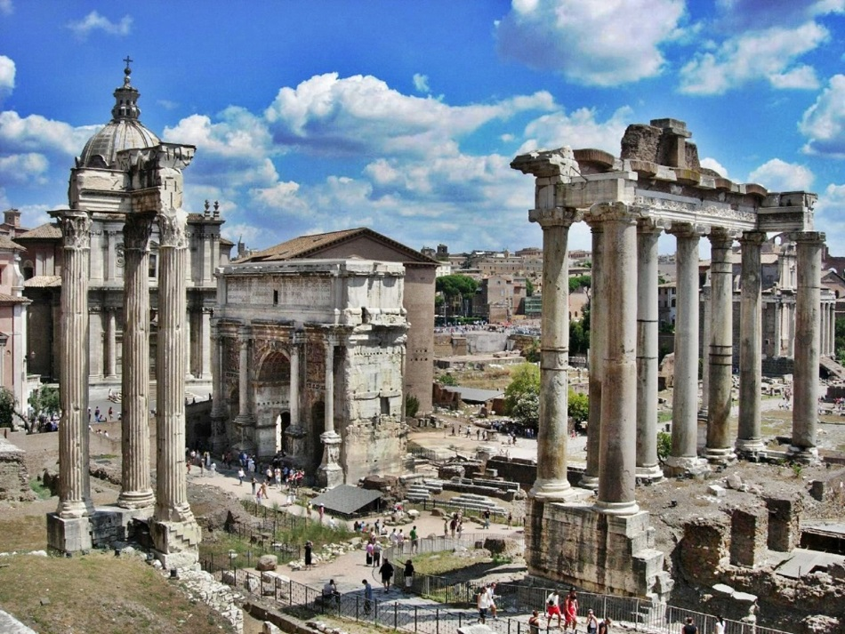

Intro
The Byzantine Empire was one of the two perpetuations of the Roman Empire, the second being The Holy Roman Empire. This part of the Roman empire is notorious for lasting very long, it’s capital lasting for 1000 years after its creation, and the walls around the capital still standing today. This empire became known as the most powerful force in all of Europe. However, both the Byzantine Empire, and the Holy Roman Empire for that matter had very humble beginnings.
